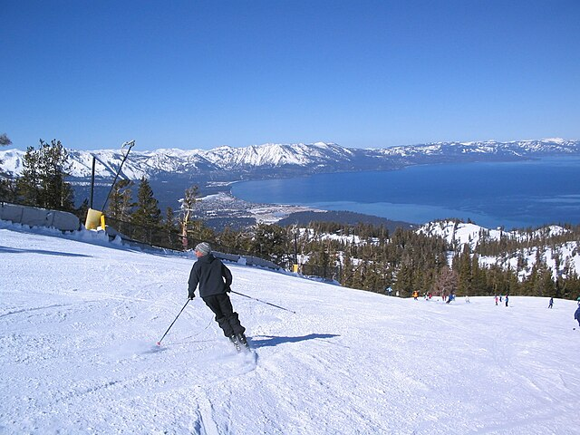
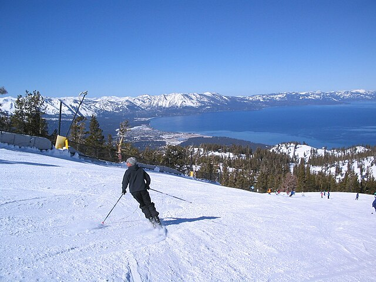

Travel
Yellowstone

Yellowstone National Park, established in 1872, is a renowned wilderness expanse spanning three U.S. states, featuring geothermal wonders, vibrant landscapes, and diverse wildlife, including iconic species like bears and wolves.
Its mesmerizing geothermal features, such as the iconic Old Faithful geyser, and the expansive Yellowstone Caldera make it a globally cherished destination for nature enthusiasts and adventure seekers alike.
Photo Gallery


Highlights
- Old Faithful Geyser: One of the most famous geysers in the world, Old Faithful erupts at regular intervals, shooting hot water and steam into the air.
- Grand Canyon of the Yellowstone: Carved by the Yellowstone River, this canyon features colorful canyon walls, stunning waterfalls like the Lower Falls, and impressive viewpoints such as Artist Point.
- Yellowstone Lake: The park is home to the largest high-altitude lake in North America, offering picturesque landscapes, fishing opportunities, and a serene atmosphere.
Lake Tahoe
Nestled in the Sierra Nevada mountain range, Lake Tahoe is a breathtaking alpine lake that straddles the border between California and Nevada. Renowned for its crystal-clear blue waters, surrounded by snow-capped peaks and lush forests, Lake Tahoe is a year-round destination offering outdoor enthusiasts pristine landscapes, vibrant recreational activities, and a serene mountain escape.
Photo Gallery
 

Highlights
- Emerald Bay State Park: Home to the iconic Emerald Bay, this state park features the stunning Vikingsholm Castle, panoramic viewpoints, and hiking trails with breathtaking lake views.
- Heavenly Mountain Resort: A premier ski resort in winter, Heavenly transforms into a summer playground with scenic gondola rides, hiking trails, and epic views of the lake.
- Skiing and Snowboarding: With world-class ski resorts like Squaw Valley, Northstar, and Kirkwood, Lake Tahoe is a winter paradise for skiing and snowboarding enthusiasts.
Niagara Falls
Niagara Falls, one of the world's most awe-inspiring natural wonders, straddles the border between the United States and Canada, captivating millions with its thunderous cascades and misty grandeur. The trio of magnificent waterfalls—Horseshoe Falls, American Falls, and Bridal Veil Falls—create a mesmerizing spectacle, drawing visitors to witness the sheer power and beauty of these iconic falls, while the surrounding Niagara Parks, boat tours, and scenic viewpoints offer unforgettable experiences in this breathtaking setting.
The sheer force of Niagara Falls, accompanied by the iconic Maid of the Mist boat tours and the vibrant Clifton Hill entertainment district, makes it a must-visit destination, where nature's raw power converges with exhilarating human experiences.
Photo Gallery


Highlights
- Maid of the Mist: Experience the awe of Niagara Falls up close on the iconic Maid of the Mist boat tour, taking you into the heart of the misty spray for an unforgettable encounter with the falls.
- Journey Behind the Falls: Venture behind the cascading waters of Horseshoe Falls through tunnels to witness the power and majesty of Niagara from a unique and thrilling perspective.
- Niagara Parks: Explore the beautiful Niagara Parks, which offer manicured gardens, walking trails, and stunning viewpoints providing panoramic vistas of the falls.
- Niagara SkyWheel: Enjoy breathtaking aerial views of the falls and the surrounding landscape from the Niagara SkyWheel, a giant Ferris wheel located on Clifton Hill.